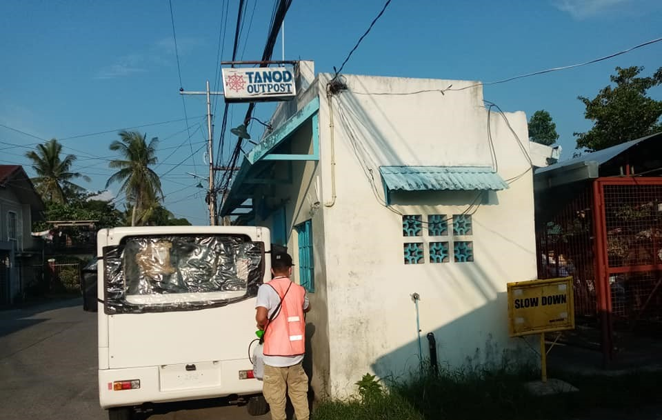
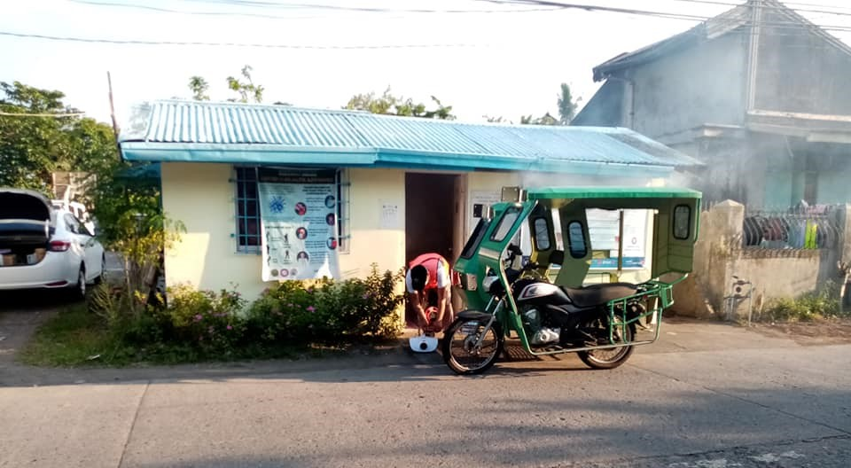
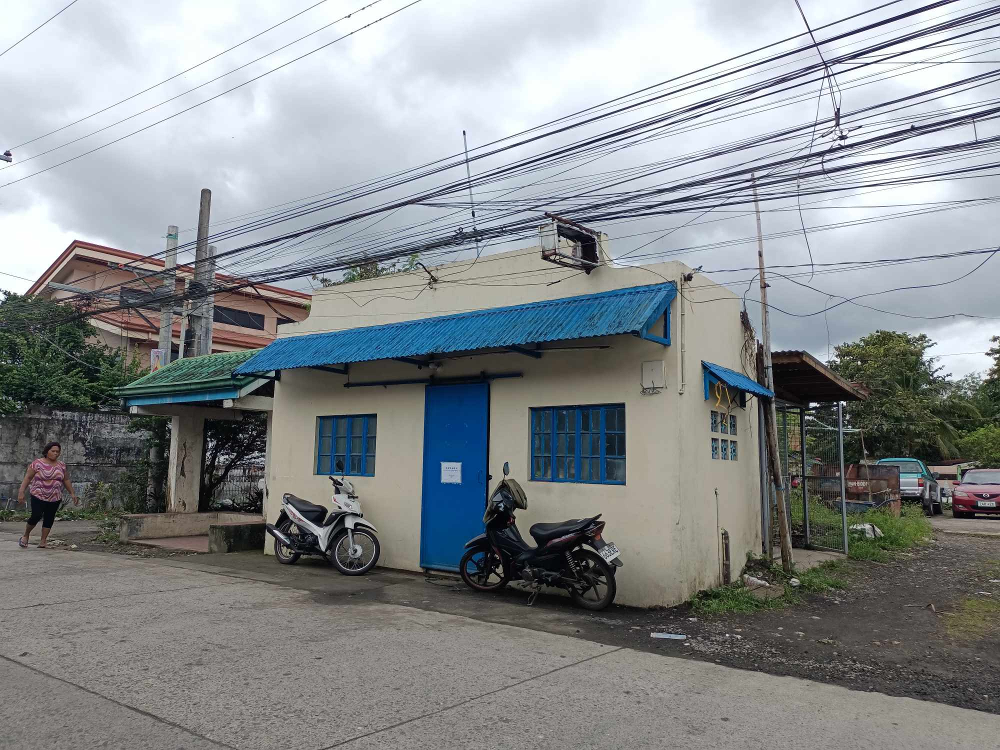
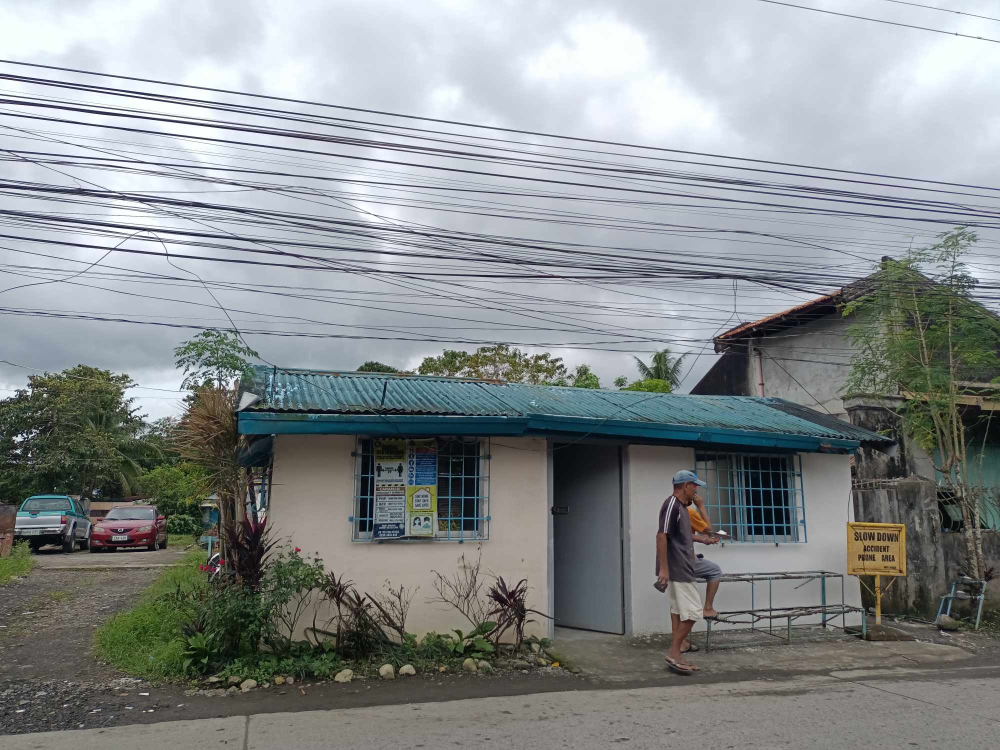
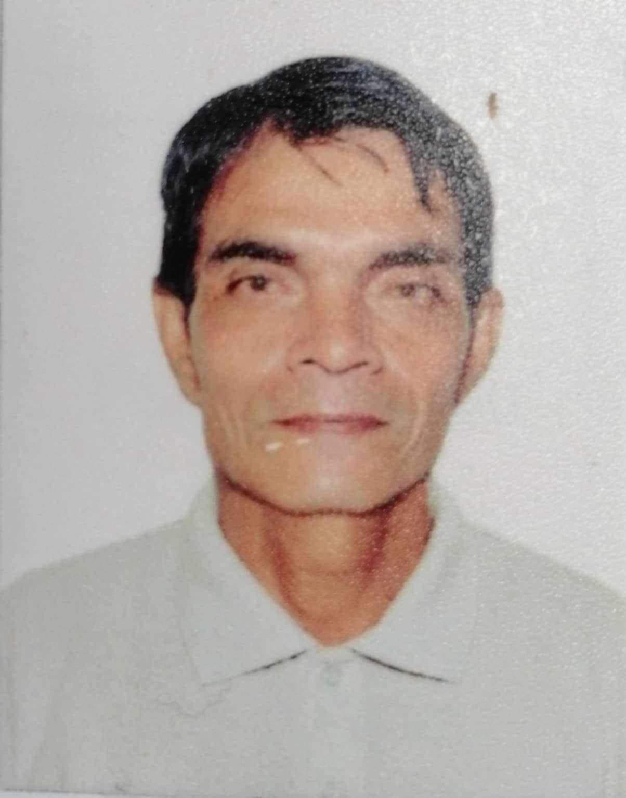
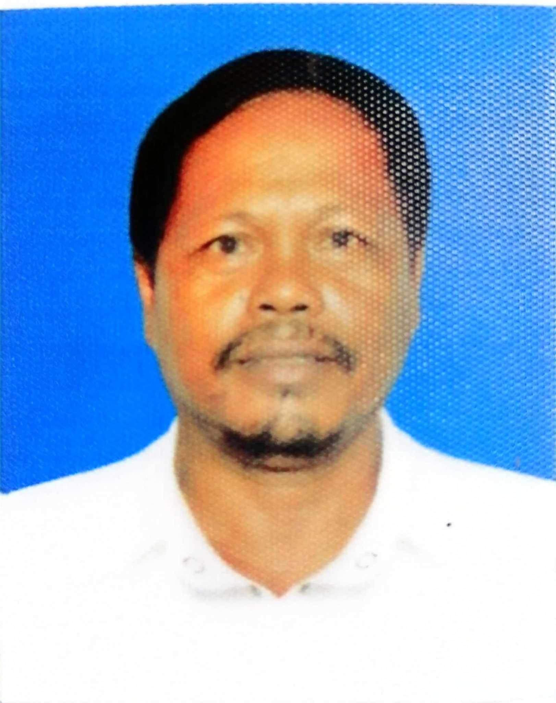
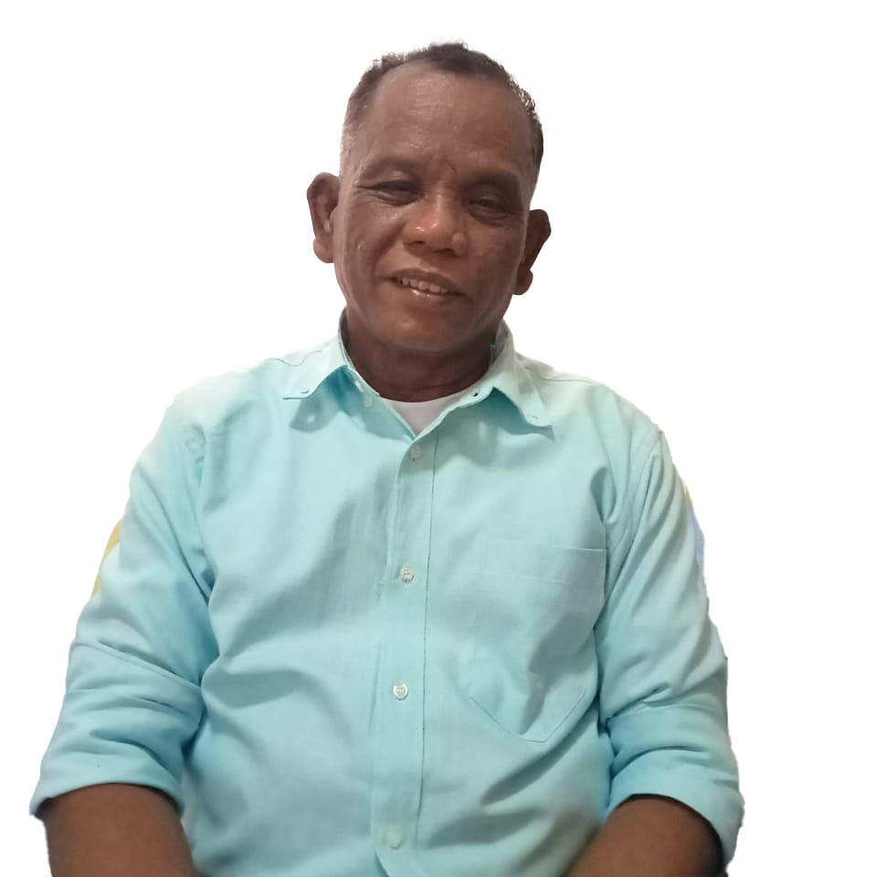

Barangay Dinaga is located within the poblacion area of Canaman, where key community landmarks such as the Municipal Hall, Canaman Central School, Canaman Parish Church, Public Cemetery, and various local businesses are situated. Many residents are employed in public and private establishments, while a substantial portion of the barangay remains agricultural lowland.
One of the prominent barangays in the Municipality of Canaman, Camarines Sur, Barangay Dinaga covers approximately 58.585 hectares and is divided into six (6) zones: Zone 1, Zone 2, Zone 3, Zone 4, Zone 5, and Zone 6.
Characterized by fertile lowlands well-suited for rice cultivation, farming and backyard livestock raising remain vital livelihoods for local families. The primary languages spoken in the community are Bikol and English.
Agriculture
One of the major sources of income in Barangay Dinaga is rice farming. Farmers sell their produce—either raw palay or milled rice—to traders in nearby barangays and outside the municipality. Aside from rice farming, many households raise pigs, chickens, and other livestock in their backyards, while some cultivate vegetables for family consumption and supplemental income.
Population & Households
Based on the 2007 Barangay Rapid Assessment Survey, Barangay Dinaga had an estimated population of 1,541 across six zones, with 315 households averaging 4.89 members per household. By the 2020 National Census, the population grew to 1,768 residents, representing 4.88% of Canaman’s total population.
Education
Pre-School
Pre-school education in the barangay is served by the Day Care Center, which recorded 10 enrollees in S/Y 2007–2008. Following severe damage to its former building during Typhoon Reming in November 2006, the Day Care Center operated temporarily within the Barangay Hall premises to keep young learners safe.
Elementary
Elementary school children in Barangay Dinaga are primarily served by Canaman Central School, offering complete Grades 1–6 instruction with 24 regular permanent teachers and 3 locally funded educators supported by the Special Education Fund (SEF).
Secondary
For secondary education, most students attend Sta. Cruz High School, a public high school located in neighboring Barangay Sta. Cruz, Canaman, Camarines Sur—about half a kilometer away from Barangay Dinaga.
Tertiary
While financial constraints remain a challenge for some high school graduates pursuing college degrees, many determined youth work as working students to continue their tertiary studies and help support their families.
Health & Social Services
Barangay Dinaga is served by dedicated community-based Barangay Health Workers (BHWs) whose duties include health education, community surveys, Operation Timbang (OPT), blood pressure monitoring, and family planning lectures. They regularly attend seminars and training conducted by partner health agencies to enhance primary care delivery.
Land Area & Geographical Location
Barangay Dinaga spans an aggregate area of 58.585 hectares, of which 54.05 hectares (92.26%) are devoted to rice production, while built-up residential and institutional areas account for approximately 2.5 hectares. Strategically situated in Canaman, Camarines Sur, it is bounded on the North by Brgy. Sta. Cruz; on the South by Brgys. Del Rosario and San Vicente; on the East by Brgys. Haring, San Agustin, and Baras; and on the West by Brgy. Pangpang.
Mission
Barangay Dinaga shall promote and enhance the quality of life of its people by providing equal opportunities for socio-cultural, economic, and political development through honest and effective governance with active multi-sectoral participation and sustainable economic balance.
Vision
Barangay Dinaga will be a progressive community—a good, loving, peaceful, and healthy environment upholding quality education, nutrition, and health services for all.
History
Dinaga is one of the five barangays that constitute the poblacion of Canaman. Bounded on the north by Canaman Creek and Barangay Sta. Cruz, its southern side opens to a flat expanse of rice land reaching toward Barangays San Vicente and Del Rosario. Its eastern boundary meets Baras, San Agustin, and Haring, while to the west lies Barangay Pangpang—sharing a boundary line that runs right through the town’s Catholic church.
Historically a spin-off of Barangay Pangpang, Dinaga came into official existence during the Spanish era around the 1600s. Prior to settlement, the area was low and marshy, frequently submerged whenever high tides from San Miguel Bay caused the Bicol River to back up and keep the creek from draining—conditions worsened whenever heavy rains fell.
According to oral history, before residents settled this low-lying area, they patiently hauled and dumped earth fill—likely through a combination of community hongloan and corvée labor (polo)—to raise their homesites above the daily tidal floods. Settlers first built up the western section immediately beside the church, and as the central settlement (casco de la poblacion) grew, they laid parallel earthfill along both sides of the trail leading toward the cemetery. This gave raised Dinaga its distinctive axe-like shape, with a grid layout on the western head and a linear pattern along the eastern handle.
Logically, early inhabitants referred to the reclaimed settlement as DINAGAAN (“filled with earth”). Over time, everyday usage shortened the name to Dinaga—a name the barangay has carried for over three centuries, even after briefly being called “Bagong Bayan” during the early 1900s.
Barangay Hall
2020

Barangay Tanod Outpost
2020

Barangay Health Center
2020
Barangay Hall
2024

Barangay Tanod Outpost
2024

Barangay Health Center
2024
Past (2020)
Barangay Hall (2020): Served as the central administrative office offering basic barangay services and hosting community meetings and public consultations.
Barangay Tanod Outpost (2020): A modest community station operated by barangay tanods to patrol and maintain peace and order across all six zones.
Barangay Health Center (2020): A compact yet essential primary healthcare station providing immunizations, maternal care, and community health education.
Present (2024)
Barangay Hall (2024): Renovated and modernized administrative hub designed for smoother resident transactions, public assemblies, and barangay operations.
Barangay Tanod Outpost (2024): A reinforced outpost equipped with improved monitoring tools and patrol vehicle support, strengthening response times and community safety.
Barangay Health Center (2024): Upgraded community health facility supporting regular free check-ups, vaccination drives, maternal care, and family health programs.
Barangay Officials
The political structure of Barangay Dinaga consists of one (1) elected Barangay Captain, seven (7) elected Barangay Councilors, the SK Chairperson, one (1) Barangay Secretary, and one (1) Barangay Treasurer.
Barangay Captain
Nestor S.J. Africa
Councilor
Avelino B. De Vera
Councilor
Menardo A. Amaro
Councilor
Ester S.A. Porlaje
Councilor
Myrna S. Pante
Councilor
Virgilio V. Hermoso Jr.
Councilor
Mary Joy R. Dela Masa
Councilor
Sofronio F. Portuguez
SK Chairperson
Sofia C. Vargas
Secretary
Catherine B. Arevalo
Treasurer
Myra A. Penaredondo
Sangguniang Kabataan
Chairperson
Sofia C. Vargas
Treasurer
Brianna Lainelle Aguilar
Youth Council
Floriel A. Quintano
Youth Council
Joebert Jay Balondo
Youth Council
Charles B. Flores
Youth Council
Ma. Erica A. Balictar
Youth Council
Junnle V. Galan
Youth Council
Elvis M. Occidental
Youth Council
Mathew Jule A. Naoe
Barangay Watchmen
Chief Watchman
Mauro C. Casilihan
Brgy. Watchman
Rosario Victoria B. Tesoro

Brgy. Watchman
Alvin A. Atencia

Brgy. Watchman
Antonio R. Valencia
Brgy. Watchman
Richard P. Garchitorena
Brgy. Watchman
Jomel S. Medrano
Brgy. Watchman
Hernan S. San Joaquin
Brgy. Watchman
Renante A. Rosales
Brgy. Watchman
Julio Africa
Barangay Nutrition Scholar
Nutrition Scholar
Cyril H. Azanes
Child Development Worker
CDW
Angelina V. Zaleta

“Ang lahat ng ating pagsisikap, mula sa unang araw natin bilang Barangay Captain, ay ginagabayan ng isang prinsipyo: Good Governance o Mabuting Pamamahala. Naipakita natin sa lahat na kapag maayos ang ating pamamalakad, walang imposible.
Kayo ang sikreto kung bakit Number 1 na Barangay ang Dinaga.”